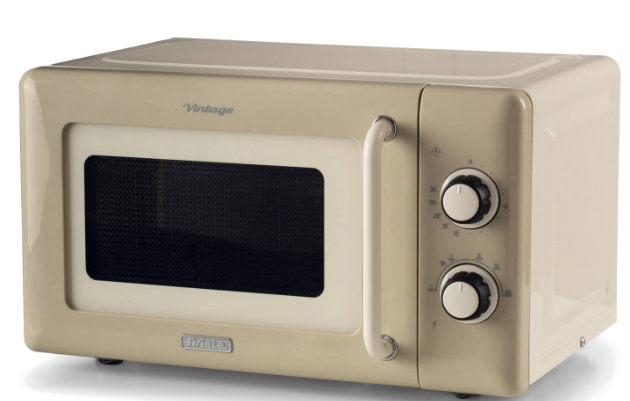

| Uso | Come partire |
|---|---|
| 100% · 800 W | Cottura rapida: verdure, piatti pronti e riscaldamento veloce. |
| 85% · 680 W | Cottura normale: indicata per la maggior parte dei piatti e per riscaldare porzioni già cotte. |
| 66% · ~530 W | Cottura lenta: utile per alimenti che devono scaldarsi più dolcemente e in modo uniforme. |
| 40% · 320 W | Bevande e zuppe: latte, acqua, tè, minestre e preparazioni liquide. Mescola prima di bere. |
| 37% · ~300 W | Scongelamento: carne, pollame e pesce. Gira o separa i pezzi durante lo scongelamento. |
| 17% · ~135 W | Mantenimento in caldo: per tenere tiepidi cibi già cotti senza usare la massima potenza. |
Non inserire posate, vaschette metalliche, alluminio o stoviglie con decorazioni metalliche.
Non scaldare recipienti ermeticamente chiusi. Apri o fora le confezioni predisposte prima di riscaldarle.
Fai attenzione a tazze e liquidi: possono essere più caldi di quanto sembrano. Mescola e verifica la temperatura prima di bere.
Non avviare il microonde senza alimenti o bevande all’interno.